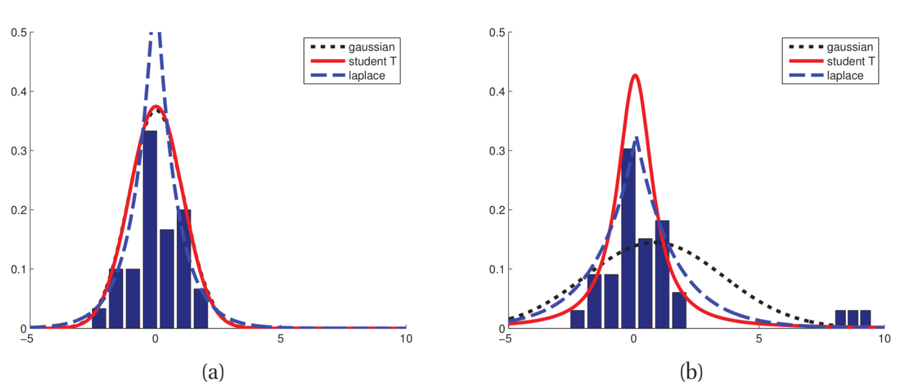

机器学习中常用的概率分布
目录
本文蜻蜓点水般的过一下机器学习中用到的概率分布。这些分布不仅在机器学习中有广泛使用，而且在各个领域都有用到。
1 二项分布
二项分布也称伯努利分布。假设我们丢均匀硬币\(n\)次，令随机变量\(X\)表示出现正面的次数，则\(X\)服从二项分布，记为\(X\sim \mathrm{Bin}(n,\theta)\),概率密度函数是：
\begin{equation} \label{eq:1} \mathrm{Bin}(k|n,\theta) \triangleq \binom{n}{k}\theta^{k}(1-\theta)^{n-k} \end{equation}其中：
\begin{equation} \label{eq:2} \binom{n}{k} = \frac{n!}{(n-k)!k!} \end{equation}是二项式系数，表示从\(n\)个元素中选出\(k\)个的组合数。二项分布的均值为\(\theta\)，方差为\(n\theta (1-\theta)\).
\begin{equation} \label{eq:3} \mathrm{mean} = \theta,\quad \mathrm{var} = n\theta(1-\theta) \end{equation}2 多项分布
二项分布用于建模丢硬币这样的结果有两种可能的事件，对于结果有\(K\)中可能的事件，我们用多项式分布建模。假设\(\mathbf{x} = (x_{1},\ldots ,x_{K})\)是一个随机矢量，\(x_{j}\)表示第\(j\)个可能出现的次数，我们有\(\sum_{i=1}^{K}x_{i} = n \)，则\(\mathbf{x}\)具有的分布是:
\begin{equation} \label{eq:4} \mathrm{Mu}(\mathbf{x}| n, \mathbf{\theta}) = \binom{n}{x_{1},\ldots ,x_{k}}\prod_{j=1}^{K}\theta_{j}^{x_{j}} \end{equation}\(\theta_{j}\)代表第\(j\)个可能出现的概率，
\begin{equation} \label{eq:5} \binom{n}{x_{1},\ldots ,x_{K}} = \frac{n!}{x_{1}!x_{2}!\ldots x_{K}!} \end{equation}是多项式系数。这个多项式系数是把\(n=\sum_{k=1}^{K}x_{k} \)分成\(x_{1},\ldots ,x_{K}\)的所有可能的分法。关于多项式系数更有意思的结论可以参见 这篇博文。
3 泊松分布
随机变量\(X\)服从泊松分布，则其概率密度分布可以表示为：
\begin{equation} \label{eq:6} \mathrm{Poi}(x|\lambda) = e^{-\lambda} \frac{\lambda^{x}}{x!} \end{equation}其中\(e^{-\lambda}\)是归一化敞亮，用于保证分布的和是1.
泊松分布经常用于对较少发生的事情建模，比如一碗食堂免费汤里的蛋花。
4 经验分布
给定一个数据集\(\mathcal{D} = \{x_{1},\ldots ,x_{N}\}\)，我们定义一个经验分布（也叫经验度量），
\begin{equation} \label{eq:7} P_{\mathrm{emp}}(A) = \frac{1}{N} \sum_{i=1}^{N}\delta_{x_{i}} (A) \end{equation}其中\(\delta_{x}(A)\)是狄拉克度量，
\begin{equation} \label{eq:8} \delta_{x}(A) = \begin{cases} 0 & x\notin A \\ 1 & x\in A \end{cases} \end{equation}通常意义上我们为每一个样本分配一个权重：
\begin{equation} \label{eq:9} p(x) = \sum_{i=1}^{N}w_{i}\delta_{x_{i}}(x) \end{equation}其中\(w_{i}\)是权重，满足\(0\leq w_{i} \leq 1\)，且\(\sum_{i=1}^{N}w_{i} = 1\)。我们可以把这个想象成一个直方图，在每一个\(x_{i}\)处都有一个高为\(w_{i}\)的直方柱。
5 高斯分布
高斯分布是机器学习和统计学中使用最广泛的分布，关于高斯分布的八卦见我的这篇博文 。其密度函数是：
\begin{equation} \label{eq:10} \mathcal{N}(x|\mu,\sigma^{2}) = \frac{1}{\sqrt{2\pi \sigma^{2}}}e^{-\frac{(x-\mu)^{2}}{2\sigma^{2}}} \end{equation}这里\(\mu = \mathbb{E}(X)\)是均值，\(\sigma^{2}\)是方差。\(\sqrt{2\pi\sigma^{2}}\)是归一化因子，用来保证密度函数积分为1.
我们用\(X\sim \mathcal{N}(\mu,\sigma^{2})\)来表示\(X\)服从高斯分布，其密度函数为\(p(x|\mu,\sigma^{2})\)，如果\(X\sim \mathcal{N}(0,1)\)，我们说\(X\)服从正态分布。通常，我们用方差的导数表示高斯分布的精度\(\lambda = 1/\sigma^{2}\)，一个高精度的高斯密度函数指的是一个方差较小的高斯函数。这一意味着，随机变量的值大都集中于均值\(\mu\)周围。考虑在\(x=\mu\)出的概率，其值为\(\mathcal{N}(\mu|\mu,\sigma^{2}) = \frac{1}{2\pi \sigma^{2}}\)，所以如果\(\sigma < \sqrt{2\pi}\)，我们有\(p(x) > 1\)，即出现了概率大于1的现象。
高斯函数的累积分布函数(CDF)定义为：
\begin{equation} \label{eq:11} \Phi(x;\mu,\sigma^{2})= \int_{-\infty}^{x} \mathcal{N}(z|\mu,\sigma^{2}) \mathrm{d}z \end{equation}这个CDF没有闭式解析解，但是很多软件包都可以用来结算该CDF。
高斯函数之所以在统计学中有广泛应用，基于以下原因：
- 高斯分布只用两个参数就可以解释：均值和方差。
- 中心极限定理告诉我们：独立随机变量的和近似于高斯分布。所以我们用高斯变量来建模噪声。
- 使用高斯分布用最少的假设条件就可以构建满足某种均值和方差的分布。
- 高斯分布的数学形式简单，易于实现。
5.1 高斯分布的退化
当我们令式~(\ref{eq:10})中的\(\sigma^{2}\)趋近零的时候，高斯分布的精度会越来越高，意味着高斯分布越来越窄，窄到只在\(x=\mu\)处有值：
\begin{equation} \label{eq:12} \lim_{\sigma^{2}\to 0} \mathcal{N}(x|\mu,\sigma^{2}) = \delta(x-\mu) \end{equation}其中\(\delta(x)\)是狄拉克函数：
\begin{equation} \label{eq:13} \delta(x) = \begin{cases} 1 & x = 0 \\ 0 & x\neq 0 \end{cases} \end{equation}且有：
\begin{equation} \label{eq:14} \int_{-\infty}^{\infty} \delta(x) \mathrm{d}x = 1 \end{equation}这个狄拉克函数的最大作用是采样，可以用这个函数从一个和中选出一项，比如：
\begin{equation} \label{eq:15} \int_{-\infty}^{\infty}f(x)\delta(x-\mu)dx = f(\mu) \end{equation}高斯函数的一个缺点是对异类(outlier)特别敏感（记不记得格拉德维尔有本书中文名是《异类》，其英文名就是outlier，这本书还不错，推荐阅读。格拉德维尔所著的书中我觉得只读一本的话读这本就可以了，只可惜我都读了才明白，花费了不少宝贵时间）。好吧，回到高斯函数对异类敏感，这是因为高斯函数取\(\log\)之后只随着\((x-\mu)\)的平方衰减，\(x-\mu\)是\(x\)到高斯函数中心的距离。一个更鲁棒的分布是学生分布。
6 学生分布
学生分布密度函数：
\begin{equation} \label{eq:16} \mathcal{T}(x|\mu,\sigma^{2},\nu) \propto \bigg[ 1 + \frac{1}{\nu}\big(\frac{x-\mu}{\sigma}\big)^{2} \bigg]^{-\frac{\nu + 1}{2}} \end{equation}其中\(\mu\)是均值，\(\sigma^{2} > 0\)是缩放因子，\(\nu > 0\)是自由度。稍后我们会发现学生分布的方差是\(\frac{\nu\sigma^{2}}{\nu-2}\)。

图 1: 高斯函数对异类敏感，学生分布更鲁棒
我们从图1 可以看出高斯分布对异类更敏感，而学生分布则要稳定的多。对于学生分布\(\nu=1\)时，我们也称其为柯西分布或者洛伦兹分布。这个分布的尾巴很重以至于求均值计算积分的时候根本不收敛。
为了保证方差有限，我们要求\(\nu > 2\). \(\nu = 4\)是比较常见的一个参数。当\(\nu \ggg 5 \)的时候，学生分布近似于高斯分布，逐渐失去其鲁棒性。
7 拉普拉斯分布
拉普拉斯分布也是具有重尾的分布，这个分布也叫作双边指数分布，从其定义式上就可以看出为什么这么称呼：
\begin{equation} \label{eq:17} \mathrm{Lap}(x| \mu ,b) = \frac{1}{2b} \mathrm{exp} \bigg( -\frac{|x-\mu|}{b} \bigg) \end{equation}这里\(\mu\)是位置参数,\(b\)是一个缩放参数。拉普拉斯分布的均值是\(\mu\)，方差是\(2b^{2}\)。这个分布对于异类也是不敏感的，在\(0\)附近聚集了更多的概率密度。使用这个分布我们可以在模型中允许更多的稀疏性(sparsity)。
8 伽马分布
伽马分布是一个非常灵活的分布。伽马分布由两个参数决定形状参数\(a\)，和速率参数\(b\):
\begin{equation} \label{eq:18} \mathrm{Ga}(T| \mathrm{shape} = a, \mathrm{rate} = b) = \frac{b^{a}}{\Gamma(a)}T^{a-1}e^{-Tb} \end{equation}其中\(\Gamma(a)\)是伽马函数：
\begin{equation} \label{eq:19} \Gamma(x) = \int_{0}^{\infty} u^{x-1} e^{-u} du \end{equation}伽马分布的主要参数是：
\begin{equation} \label{eq:20} \mathrm{mean} = \frac{a}{b}, \mathrm{mode} = \frac{a-1}{b}, \mathrm{var} = \frac{a}{b^{2}} \end{equation}有几个分布是伽马分布的特例：
- 指数分布，定义为：\[ \mathrm{Expon}(x|\lambda) \mathrm{Ga}(x|1,\lambda) \]其中\(\lambda\)是速率参数。这个分布描述了泊松过程中两个事件之间的时间。
- Erlang分布。这个分布和伽马分布相同，除了\(a\)是一个整数。我们令\(a=2\)就是Erlang分布，即\[ \mathrm{Erlang}(x|\lambda) = \mathrm{Ga}(x|2,\lambda) \]其中\(\lambda\)是速率参数。
- \( \chi^{2} \)分布。这个分布定义为：\[ \chi^{2}(x|\nu) = \mathrm{Ga}(x| \frac{\nu}{2},\frac{1}{2} ) \]这个分布是高斯随机变量平方和的分布，即如果\(Z_{i}\sim \mathcal{N}(0,1) \)，\(S = \sum_{i=1}^{\nu}Z_{i}^{2}\)，那么\(S\sim \chi_{\nu}^{2}\)
9 贝塔分布
贝塔分布定义域在\([0,1]\)上，定义式为：
\begin{equation} \label{eq:21} \mathrm{Beta}(x|a,b) = \frac{1}{B(a,b)}x^{a-1}(1-x)^{b-1} \end{equation}这里\(B(p,q)\)是贝塔函数：
\begin{equation} \label{eq:22} B(a,b) = \frac{\Gamma(a)\Gamma(b)}{\Gamma(a+b)} \end{equation}为确保\(B(a,b)\)存在，\(a,b\)必须是大于零的数。当\(a=b=1\)时，贝塔分布退化为均匀分布。贝塔分布的均值是\(\frac{a}{a+b}\)，方差为\(\frac{ab}{(a+b)^{2}(a+b+1)}\)
10 Pareto分布
Pareto分布用于长尾数据量建模。例如英语里最常用的单词“the” 发生的频率是"of"的两倍，"of"发生的频率又是排名第四的单词的两倍，依次类推。如果我们根据这些单词的频率和排名画图的话，我们得到了一个幂函数的图像。这是 Zipf 定律。Pareto分布定义为：
从式 (\ref{eq:23})我们可以看出\(x\)必须大于某一个常数，但是\(x\)又不能太大（\(k\)控制着到底多大才是“大”）。当\(k\to\infty\)时，Pareto分布趋向于\(\delta(x-m)\)。这个分布的均值是\(\frac{km}{k-1},k > 1\)，方差是\(\frac{m^{2}k}{(k-1)^{2}(k-2)}\)
11 机器学习中概率分布的用途
讨论概率分布的一个重要原因是，现实生活中有很多数据可以使用这些模型来模拟。对于给定的一个数据集合\(x_{1},\ldots ,x_{n}\)我们希望这个数据集合来自于某个随机变量\(X\)，并且这个随机变量具有概率分布\(P(X)\)。找到\(P(X)\)的过程叫做密度估计（density estimation）。需要强调的是密度估计问题是一个病态问题，因为世界上的概率密度函数不计其数，能够给出观测集合\(x_{1},\ldots ,x_{n}\)的概率密度函数也是如此之多。任何一个在\(x_{1},\ldots ,x_{n}\)处非零的密度函数\(P(X)\)都可能是候选。选择一个合适的\(P(X)\)是模型选择问题，在机器学习领域经常遇见。
之前我们也看到了很多分布，把这些分布用到密度估计过程中，我们需要确定相对于这些模型的一些重要参数，比如期望，比如方差，再比如一些超参数。这些量值的确定亦有不同的方法，从频率方面（frequentist）着手的话，我们根据某个准则进行优化，为这些参数选择特定的值，常见的准则是最大似然准则。从贝叶斯方面着手的话，我们引入这些参数的一些先验估计（prior distributions）,然后使用贝叶斯定理根据给定的观测数据计算关于这些参数的后验估计。在通信系统中，贝叶斯估计是经常用到的一种密度估计处理方法。